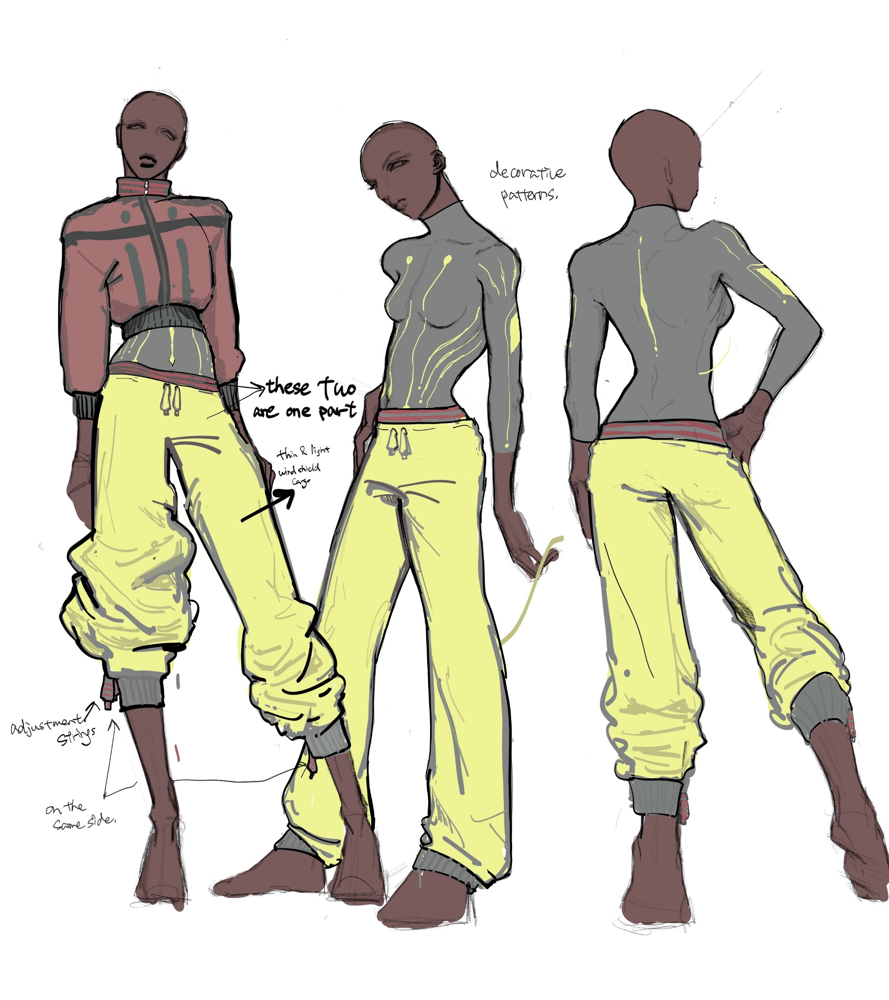
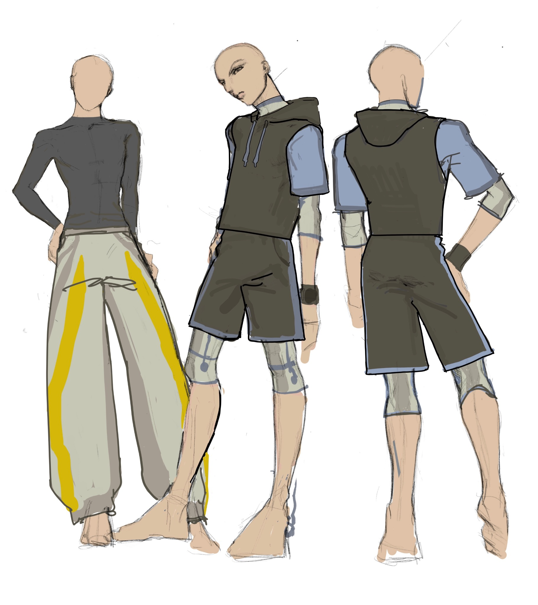

Performance Luxury
Refined silhouettes, elevated basics, oversized proportions, clean cuts, and a restrained visual language combined with technical functionality.
BAM / CONCEPT PROJECT
Performance clothing for a life in motion.
Explore the direction ↓01 — THE CONCEPT
BAM MOMENTUM explores the space between training, professional life, and everyday movement. Inspired by Essential's elevated minimalism and BAM's technical identity, the collection combines refined silhouettes with functional performance details.
“Fashion that goes beyond the gym.”
02 — THE DIRECTION
Refined silhouettes, elevated basics, oversized proportions, clean cuts, and a restrained visual language combined with technical functionality.
Clothing designed to move effortlessly between training, work, commuting, and everyday life without requiring a complete change of outfit.
Functional garments designed to respond to movement and environment through layering, adjustability, weather protection, and purposeful construction.
DESIGN PRINCIPLES
03 — MOOD BOARDS
Click a board to explore the design ideas behind the imagery.
04 — NEW DESIGNS
Concept sketches developed from the mood boards and design direction.

CONCEPT 01
A relaxed, oversized silhouette paired with a close-fitting technical base layer. The design combines a refined proportion with functional details for movement.

CONCEPT 02
A technical base layer and hooded vest are combined with relaxed shorts to create a modular outfit that can shift between training and everyday wear.
05 — NEW LINES
A proposed product ecosystem for BAM MOMENTUM.
Lightweight jackets, cropped wind-resistant jackets, and hooded vests.
Weather protection · Adjustable details · Functional pockets · LayeringOversized and relaxed bottoms designed around movement and adaptability.
Adaptive track pants · Layered shorts · Utility shorts · Relaxed performance pantsClose-fitting performance pieces designed to work independently or underneath layers.
Long sleeves · Performance bodysuits · Fitted training topsPieces that bridge the gap between training and everyday wear.
Cropped hoodies · Technical vests · Lightweight overshirts · Convertible layersBAM MOMENTUM
Designed at the merging point of sport, work, and life.